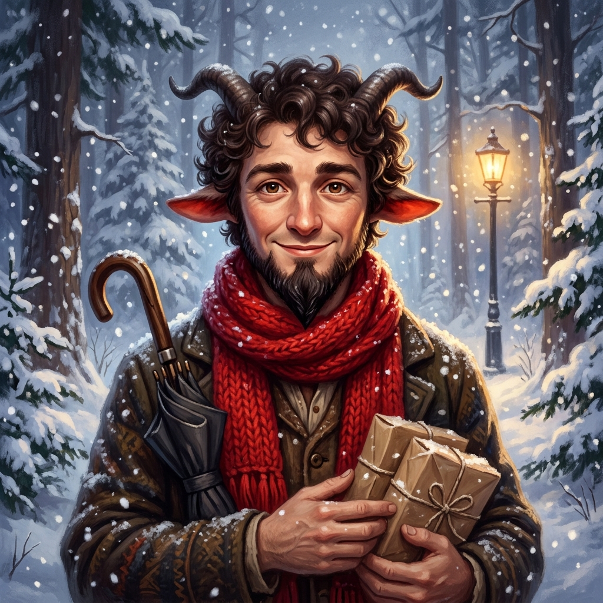
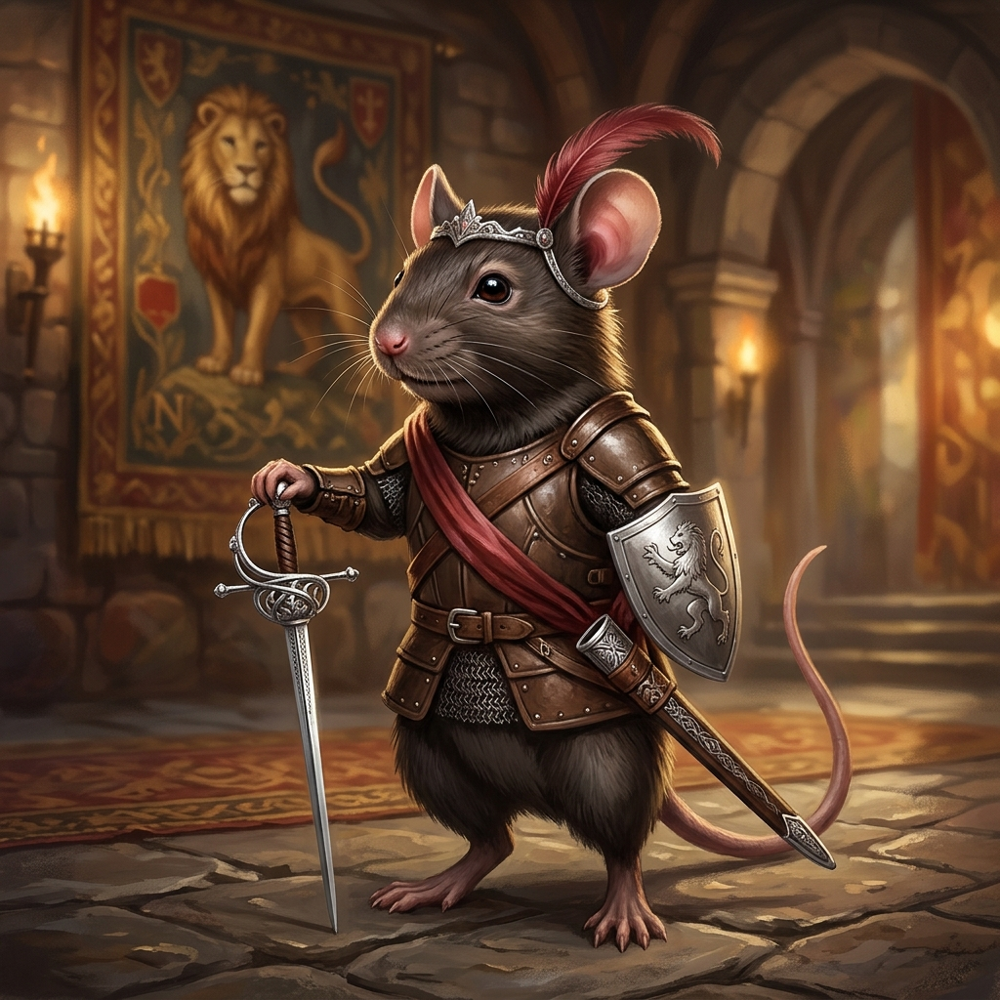

1. 選擇你的角色身份亞當之子 ／ 夏娃之女

🛡️ 聖劍見習騎士
佩文西長子風範，擅長正面迎敵與保護同伴

🏹 號角神射手
冷靜敏銳，配備魔法號角與百步穿楊的長弓
🧪 果露治癒者
純真善良，攜帶能治百病的火紅花果露與短匕首
2. 分配角色數值 剩餘可用點數：2 點
⚔️ 勇氣 (Courage)
影響戰鬥與威嚇檢定
2
🔍 智慧 (Wisdom)
影響洞察與雪地追蹤
2
✨ 心靈 (Heart)
影響交涉與亞斯藍祝福
2
3. 選擇你的獨立視窗 AI 夥伴擁有獨立思考視窗（無劇透視角）

🧣 人羊・吐姆納斯
溫和善良的納尼亞人羊，熟悉森林小徑與催眠魔笛

🗡️ 老鼠劍客・老脾氣
重榮譽、勇敢無畏的納尼亞騎士，西洋劍術極快
🪄 星語法師・萊拉
嘴硬心軟的奧術師，擅長火焰與星光防護魔法